A walkthrough for extending a Linux LVM partition end-to-end: adding a new virtual disk in VMware, turning it into a physical volume, extending the volume group, and growing the logical volume and filesystem — all online, with no reboot and no unmounting.
Example environment: a RHEL 7 VM on VMware. The target is /var (logical volume
rhel-var), starting at 9.8 GB and growing to ~59 GB.
Step 1 — Identify the partition to increase
Check current usage with df -hT before touching anything, to confirm which
partition actually needs the space.
$ df -hT
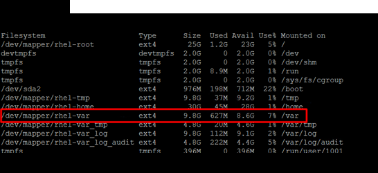
Step 2 — Review the current partition table
Escalate to root and run fdisk -l to see how the primary disk is laid out
before adding a new one.
$ sudo -s
$ fdisk -l
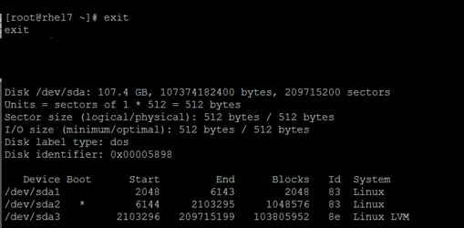
Step 3 — Add a new virtual hard disk in VMware
With no free space left on the existing disk, attach a new virtual disk to the VM. Open Edit Settings on the VM, then click Add... to open the Add Hardware wizard.
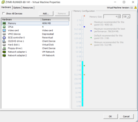
Step 4 — Select Hard Disk as the device type
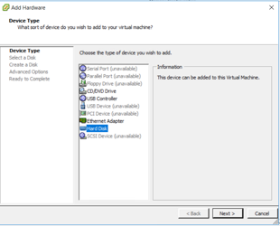
Step 5 — Create a new virtual disk
On the Select a Disk screen, choose Create a new virtual disk.
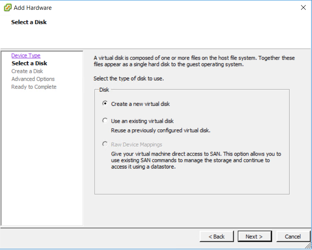
Step 6 — Configure disk size and provisioning policy
Set the size (100 GB in this example) and choose a provisioning policy:
- Thin Provision — space allocated on demand; good for dev/test to save datastore space.
- Thick Provision Lazy Zeroed — full space reserved immediately, zero-filled on first write.
- Thick Provision Eager Zeroed — full space reserved and zero-filled up front; best for production/SLA workloads.
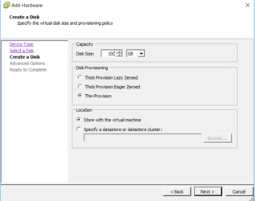
Step 7 — Confirm and apply the new disk
Click through Advanced Options (defaults are fine), review the Ready to Complete summary, then OK. The new disk attaches to the guest OS without a reboot.
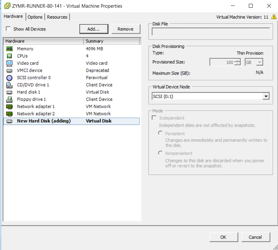
Step 8 — Verify the new disk is detected by the OS
$ fdisk -l
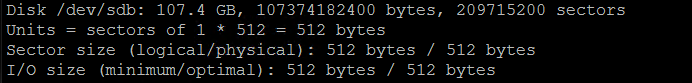
Step 9 — Launch fdisk to partition the new disk
$ fdisk /dev/sdb
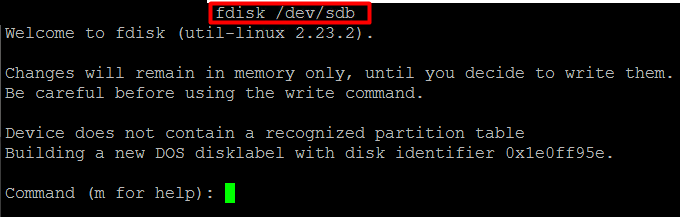
Step 10 — Create a new LVM partition on /dev/sdb
Inside the fdisk session, run the sequence: create a partition spanning the whole disk, set its type to Linux LVM, verify, and write.
$ n → p → [Enter] → [Enter] → [Enter] # new primary partition, accept defaults
$ t → 8e # set type to Linux LVM
$ p # print table to verify
$ w # write and exit
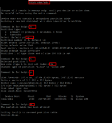
Step 11 — Inspect the current LVM state
Before extending anything, check the existing physical volumes, volume group size, and logical volume layout.
$ pvs
$ vgs
$ lvs
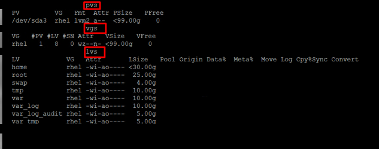
Step 12 — Create a physical volume and extend the volume group
$ pvcreate /dev/sdb1
$ vgextend rhel /dev/sdb1
$ vgs
pvcreate registers /dev/sdb1 as an LVM physical volume;
vgextend adds it into the rhel volume group. After both, VSize
should jump to ~198.99 GB with ~100 GB free.
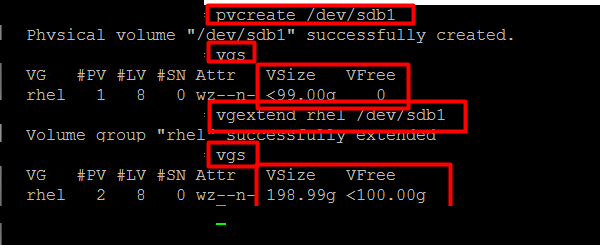
Step 13 — Confirm the target logical volume
Before extending, confirm the exact device path of the target LV — /dev/mapper/rhel-var, currently 10.7 GB.
$ fdisk -l /dev/mapper/rhel-var
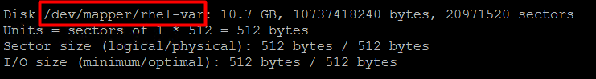
Step 14 — Extend the logical volume and resize the filesystem
The final two operations — both online, no unmounting required.
$ lvextend -L +50G /dev/mapper/rhel-var
$ resize2fs /dev/mapper/rhel-var
$ df -hT
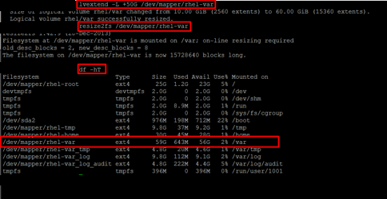
Summary of commands
Full sequence
df -hT # identify the partition to expand
fdisk -l # review existing partition table
fdisk /dev/sdb # partition the new disk
n → p → [Enter] → [Enter] → [Enter]
t → 8e # set type to Linux LVM
w # write and exit
pvs / vgs / lvs # review LVM state
pvcreate /dev/sdb1 # initialize new PV
vgextend rhel /dev/sdb1 # add PV to volume group
lvextend -L +50G /dev/mapper/rhel-var # extend the LV
resize2fs /dev/mapper/rhel-var # resize the filesystem
df -hT # verify the new size
Hit a wrinkle with a different LVM layout or disk controller? Drop a mail at vsiranjeevi93@gmail.com.